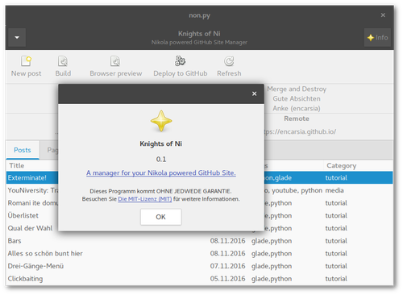
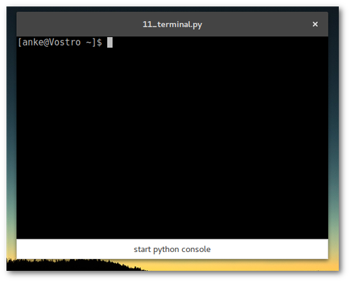
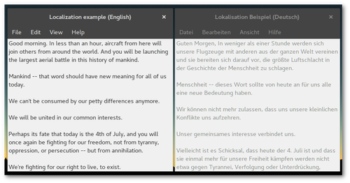
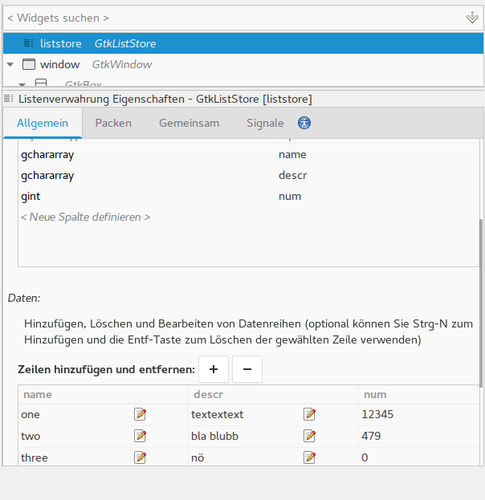

Data view
Contents
Display TreeStore data
(Continuation of the ListStore article)

TreeStore vs. ListStore
In contrast to ListStores TreeStore rows can possess child rows. That's why the append function requires another parameter that specifies the parent row reference:
#append row to liststore store.append([value1,value2,value3]) #append row to treestore store.append(parent,[value1,value2,value3])
The parent value is either
- None if the current row is not a child row of another, or
- TreeIter pointing to the superordinate row.
The TreeIter value is generated when creating a row, subordinate rows are created by
row1 = store.append(None,[value1,value2,value3]) row2 = store.append(row1,[value1,value2,value3])
The TreeIter of a cell is obtained by calling the get_selection function of the automatically generated GtkTreeSelection widget.
Glade
In the example there are two TreeStores with some columns and the coresponding TreeView widgets to display the data columns.
TreeModelSort
Sorting a column is set by calling set_sort_column_id. If this is applied to the TreeStore all TreeView widgets using this store are equally sorted.
If this behaviour is not diesired TreeModelSort elements come into play and which are "interposed" between store and view widgets. First the TreeModelSort is created via "Miscellaneous > Tree Model Sort" from the widget sidebar. Then you choose a source TreeView to use data from. After that the model in the TreeView widget is replaced by the newly created TreeModelSort.
The sort function is now simply applied to the TreeModelSort object instead to the TreeView object.
TreeModelFilter
TreeModelFilter allows to only show data that matches the specified filter criteria. Handling this object is analogue to TreeModelSort.
In the example the varieties can be filtered according to fruit colour so there is a GtkButtonBox required to put the corresponding buttons into.
Load formatting values from the model
Besides the columns containing displayed data there is a "weight" column in the first TreeStore. This value is used to show the cell in bold text. It is realized by setting the CellRenderer's property of "Font weight" to the column containing the corresponding value (normal font is 400). In this way the appearance of cells can be defined, for example colours or font formating.
Python
TreeModelSort
Requesting a position by calling GtkTreeSelection.get_selected() returns a tuple (model, pos), pos of model points to TreeModelSort (or TreeModelFilter) and requires conversion to the TreeStore position:
model,pos = selection.get_selected() converted_iter = treesort.convert_iter_to_child_iter(pos) store.set_value(converted_iter,column,value)
TreeModelFilter
First of all a filter function is required defining the visibility of cells, in the example it's the variable self.color:
def color_filter_func(self,model,iter,data): if model[iter][2] == self.color: return True else: return False
This function has to be assigned to TreeFilter
treefilter.set_visible_func(filter_func)
A filter process is then executed by calling the refilter() function on the TreeFilter object:
def on_button_clicked(self,widget): x.color = widget.get_label() x.obj("treefilter").refilter()
New project: Knights of Ni
Knights of Ni - small managing tool for the static website generator Nikola
{kind=link}
New little project made of Glade and Python on GitHub: Knights of Ni.
Exterminate!
The VTE terminal widget
{kind=link}
Glade
The widget can be found in the lower part of the widget side bar and provides a complete terminal emulator. To close the window on the exit command the child-exited signal has to be assigned.
A button click shall open a Python prompt within the terminal window, so we need the familiar clicked signal.
Python
Elements used in Glade that are not part of the Gtk module have to be registered as a GObject object (this is also required when using a GtkSourceView widget as the functionality is provided by the *GtkSource module):
GObject.type_register(Vte.Terminal)
The terminal emulator is initiated by calling spawn_sync expecting 7 parameters. Detailed information on the parameters are available in the documentation but for a common start a lot of defaults and Nones will do:
terminal.spawn_sync( Vte.PtyFlags.DEFAULT, None, ["/bin/bash"], None, GLib.SpawnFlags.DEFAULT, None, None, )
The feed_child function must be called to send a command to the console. The expected parameters are the string including a newline and the length of the string:
command = "python\n" x.terminal.feed_child(command,len(command))
Romani ite domum
Contents
Localization with gettext and locale
{kind=link}
Glade
Strings in widgets are by default configurated as translatable so there are no preparations required. GetText directly provercesses Glade project files.
Python
Translatable strings
Approved translatable strings are recognized by xgettext by brackets with a leading underscore:
_ = gettext.gettext translatable_string = _("translate me")
configure (bind)textdomain
Now name and location of the MO files have to be configured in the source code:
locale.bindtextdomain(appname,locales_dir) locale.textdomain(locales_dir) gettext.bindtextdomain(appname,locales_dir) gettext.textdomain(appname) builder.set_translation_domain(appname)
set_translation_domain has to be called before loading Glade files.
GetText
POT
POT is the abbrevation for Portable Object Template. This file contains all original translatable strings. After generating an empty POT file, xgettext is executed for all source files containing translatable strings:
$ xgettext --options -o output.pot sourcefile.ext
The identified strings are added to the POT file.
#: sourcefile.ext:line number msgid "translatable string" msgstr ""
The file number reference comment can be avoided by passting the option --no-location.
In this article's example it is required to run xgettext once for the Glade file and once for the Python source code; the -j (--join-existing) option adds new found strings to an existing file:
$ xgettext --sort-output --keyword=translatable --language=Glade -j -o 10_localization/TUT.pot 10_lokalisation.glade $ xgettext --language=Python -j -o 10_localization/TUT.pot 10_lokalisation.py
PO
Translated strings are stored in a PO file per language. A new translation ist invoked by
$ msginit --input=source.pot --locale=xx # xx=language code
that generates a file after the pattern xx.po (p.e. de.po). This file can be edited in any text editor or dedicated tools such like PoEdit. A German localization for example is created by the command
$ msginit --input=TUT.pot --locale=de
If the POT file is altered the PO files are updated with the new strings by executing msgmerge:
$ msgmerge lang.po template.pot > new_lang.po
MO
MO files are (machine readable) binary files and mandatory for gettext to work. Localization files are located below the bindtextdomain following the file structure path/to/bindtextdomain)/locale/language code/LC_MESSAGES/appname.po.
In the example the bindtextdomain is created in the local directory, the generated de.po translation text file then transformed into the corresponding MO file:
$ msgfmt --output locale/de/LC_MESSAGES/TUT.mo de.po
ListStore
Store data sets in ListStores and use ComboBox and TreeView to display the data
There are a bunch of elements required to store and display tables of data in GTK+ applications:
- The model to administrate data. There are two types:
- ListStore: flat table, besides string and numerical values the rows also can be of GTK+ element type (like buttons or checkboxes), input of data sets in Glade possible
- TreeStore: just like ListStore but rows can possess child rows, input of data sets in Glade is not possible (see also TreeStore article)
- Widgets:
- TreeView: show, sort and edit data; used by both store model types; a data store can be used my multiple TreeView widgets
- ComboBox: comboboxes are used to limit input to given list items, this list can be stored in a List/TreeStore (see also spinbutton and combobox article)
- CellRenderers: Subwidgets to specify source, layout and other properties (like being editable) of displayed data rows
{kind=link}
Glade
ListStore
In the example there is one ListStore created via "Miscellaneous > List Store" which will be later used by three Widgets.
First there are some rows created. ListStore data sets can be inserted in Glade but this in practise is only convenient for typing in few data sets.
Content changes in the ListStore are simultaneously updated in the Widgets using the ListStore. For individual sorting of the same List/TreeStore it is needed to create Gtk.TreeModelSort elements (this element is used in the example of the TreeStore article).
{kind=link}
Widgets
- ComboBox
- Creating the widget you are prompted to choose as "TreeView Model". In the edit mode accessible via "Edit > Hierarchy" there is created a CellRendererText. In the first field ("Text") the column to load the items of the dropdown menu from is set. To process the selection you will need the changed signal.
- TreeView #1
- The first TreeView widget is placed within a Gtk.ScrolledWindow container. Like in a ComboBox there are created CellRenderer representing a column to show in the TreeView table. If the sort indicator is activated columns can be sorted on a column table click. Columns do not have to be sorted according to the columns they show.
- TreeView #2
-
The second TreeView widget is created within a Gtk.ViewPort. This container widget does not provide scroll bars but the automatically adapts the necessary size to display the whole content. So for larger tables you will need the Gtk.ScrolledWindow. The sort indicator is deactivated and the middle column ("Description") is made editible with the signal *edited" allocated.
- Button
- The button's function is appending a row to the ListStore, so the clicked signal is required.
Python
TreeStore
The ListStore's row can be iterated over via for row in store. New rows are added by append, other options are insert or remove to add or delete rows at specific positions.
ComboBox
For accessing a data row you need a Gtk.TreeIter object which points to the position in the model (this can also be achieved by a Gtk.TreePath object).
iter,model = widget.get_active_iter(),widget.get_model() row = model[iter] print("Selection:",row[0])
Edit cells
The edited signal passes the position and content of the edited cell. The new content of the CellRendererText has to explicitly be committed to the data store otherwise the content will return to the pre edit state. This can be accomplished by using the passed TreePath position.
def on_cellrenderer_descr_edited(self,widget,pos,edit): x.store[int(pos)][1] = edit